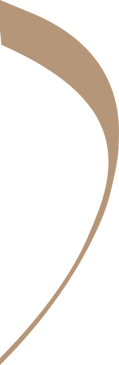

Let’s talk
Get in touch and share what brings you here, along with any questions you have.
Women’s and pelvic health physiotherapy in Paarl, with support for returning to running, exercise and sport. Care that makes space for you.
Take the first step Explore your care
Movement is part of who you are. From your morning walk to the things you love most, feeling comfortable in your body matters.
At Chante Groenewald Physiotherapy, women’s and pelvic health are at the heart of the practice. From postpartum recovery to menopause and getting active again, your concerns and movement goals belong in the same conversation.
Start a conversationWomen’s health through life’s different chapters.
Discuss your needs with the practice.
Women’s health. Everyday movement.
Space for your story.
Chanté is the physiotherapist behind Chante Groenewald Physiotherapy in Paarl. The practice focuses on women’s and pelvic health, with support for returning to running, exercise and sport.
Whether you’re navigating postpartum recovery, changes around menopause or pelvic health concerns, you can start a conversation about what matters to you and the activities you want to return to.

Get in touch and share what brings you here, along with any questions you have.
Ask about an assessment, your goals, and which care options may be appropriate.
Discuss a plan with your physiotherapist and build towards your movement goals.
A little clarity before you take the first step.
Call or WhatsApp 066 168 0935, or email admin@cgphysio.co.za to enquire. The practice will confirm appointment availability.
Confirm this with the practice when booking. Comfortable clothing and any relevant referral letters or reports may be helpful.
Referral requirements can depend on your location, care needs and funding arrangements. Check with the practice and your insurer before booking.
The practice focuses on women’s and pelvic health, with postpartum recovery and return to running, exercise and sport. Contact the practice to discuss your concerns and confirm which services are appropriate for you.
Chante Groenewald Physiotherapy · Paarl, Western Cape
Have a question? Start a conversation with the practice.